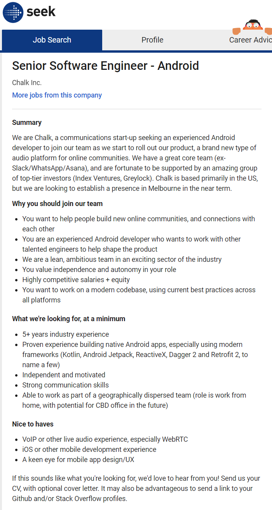

Serguei Levykin
Ideal job
Senior Software Engineer - Android
Link to the job ad: https://www.seek.com.au/job/51804999
Position description and its appeal to me
This job is for an Android engineer who will work on a new audio platform for online communities, obviously in the mobile app space. What I find interesting about this job is that it involves working with other brilliant engineers who worked on WhatsApp, Asana and Slack, that it involves facilitating online communities (I love helping people connect online and offline), and that I will be working remotely (I enjoy working alone and from home or a hotel and find it easier to concentrate). I find it appealing that the codebase will be modern and not legacy (I have previously worked on legacy codebase and did not enjoy it).
Skills and experience required
This job requires more than 5 years of experience in building native Android apps using modern frameworks, such as Jetpack and ReactiveX etc. It requires great communication skills, especially when working remotely with the team, which will be dispersed throughout different geographic location. One would have to be able to work independently and stay motivated.
Skills and qualifications that I already have
The technical experience that I have is not directly what is required for this job, but I have years of web development behind me and a rudimentary knowledge of Kotlin, Flutter and Swift and mobile application development, from my previous studies and experiments. For example, I completed an RMIT subject on iOS development in Swift.
I am definitely able to work independently, having worked from home in a team with geographically dispersed colleagues (from Sydney to countries in AsiaPac and the US) for ten years as a web developer at Cisco Systems.
My plan to obtain required skills
I am completing a Flutter development course through Udemy (interrupted by this term of university studies), which will give me enough knowledge to attempt my second mobile application in Flutter, and Dart, followed by another two applications that I have planned. I will then do an Android Kotlin development course in Udemy and possibly the Android Kotlin nanodegree from Udacity. I will then write more apps or re-write my Flutter apps in Kotlin and start applying for Android developer jobs.